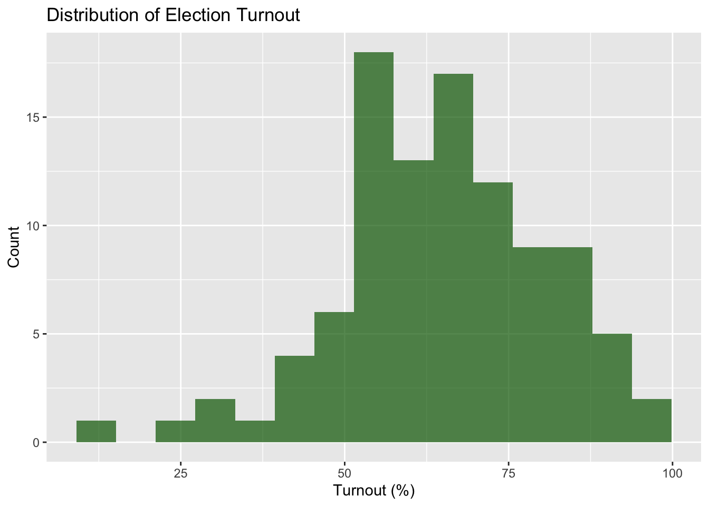

Variable Transformations in R: Understanding Distributions and Data Cleaning
Introduction
Political science data rarely comes in perfect, analysis-ready form. Before running any statistical analyses, you’ll often need to transform your variables to make them more suitable for modeling or to better understand their underlying patterns. This tutorial will walk you through essential variable transformation techniques, focusing on why these transformations matter for political science research.
By the end of this tutorial, you’ll understand:
How to identify and interpret different types of distributions
When and why to apply logarithmic transformations
Essential techniques for recoding categorical variables
Best practices for handling missing data and outliers
Setting Up: Loading Libraries and Data
library(tidyverse)
── Attaching core tidyverse packages ──────────────────────── tidyverse 2.0.0 ──
✔ dplyr 1.1.4 ✔ readr 2.1.5
✔ forcats 1.0.0 ✔ stringr 1.5.1
✔ ggplot2 3.5.2 ✔ tibble 3.3.0
✔ lubridate 1.9.4 ✔ tidyr 1.3.1
✔ purrr 1.1.0
── Conflicts ────────────────────────────────────────── tidyverse_conflicts() ──
✖ dplyr::filter() masks stats::filter()
✖ dplyr::lag() masks stats::lag()
ℹ Use the conflicted package (<http://conflicted.r-lib.org/>) to force all conflicts to become errors
library(scales)
Attaching package: 'scales'
The following object is masked from 'package:purrr':
discard
The following object is masked from 'package:readr':
col_factor
set.seed(1234) # For reproducible examples
For this tutorial, we’ll work with both simulated data and a real-world example using country-level political and economic indicators.
country gdp_per_capita population democracy_score election_turnout
1 Country 1 487.55416 7489758.2 6.349214 58.29560
2 Country 2 4519.44222 1264975.2 6.907414 76.44765
3 Country 3 15163.73142 3730254.4 5.522234 87.07578
4 Country 4 88.36301 1196659.4 6.917598 71.65497
5 Country 5 5674.21231 626561.9 5.874055 58.67417
6 Country 6 6368.27453 4565225.9 7.069599 64.39998
regime_type
1 Democracy
2 Hybrid
3 Autocracy
4 Autocracy
5 Democracy
6 Democracy
Part 1: Understanding Distributions
What Do Distributions Tell Us?
The distribution of a variable shows us how values are spread across the range of possible outcomes. In political science, understanding distributions helps us:
Choose appropriate statistical methods
Identify unusual cases or outliers
Make valid comparisons across groups
Communicate findings effectively
Visualizing Distributions
Let’s examine the distribution of GDP per capita in our sample:
# Basic histogramcountries %>%ggplot(aes(x = gdp_per_capita)) +geom_histogram(bins =20, fill ="steelblue", alpha =0.7) +labs(title ="Distribution of GDP per Capita",x ="GDP per Capita (USD)",y ="Count") +theme_minimal()
What do you notice? The distribution is heavily right-skewed—most countries cluster at lower GDP levels, with a few very wealthy countries creating a long right tail.
Types of Distributions in Political Science
Normal Distribution: Symmetric, bell-shaped curve. Many statistical tests assume normality.
# Election turnout - closer to normalcountries %>%ggplot(aes(x = election_turnout)) +geom_histogram(bins =15, fill ="darkgreen", alpha =0.7) +labs(title ="Distribution of Election Turnout",x ="Turnout (%)",y ="Count")

Skewed Distributions: Common with economic variables, population sizes, conflict casualties.
# Population - highly right-skewedcountries %>%ggplot(aes(x = population)) +geom_histogram(bins =20, fill ="coral", alpha =0.7) +labs(title ="Distribution of Population",x ="Population",y ="Count") +scale_x_continuous(labels =label_scientific())
Part 2: The Power of Logarithmic Transformations
Why Log Transformations Matter
Logarithmic transformations are crucial in political science because they:
Reduce skewness in right-skewed distributions
Stabilize variance across different scales
Make relationships linear that are otherwise exponential
Allow meaningful interpretation of percentage changes
When to Use Log Transformations
Use log transformations when:
Variables span several orders of magnitude (GDP, population, military spending)
You observe exponential relationships
You want to interpret effects as percentage changes
The variable has a long right tail
Applying Log Transformations
# Add log-transformed variablescountries <- countries %>%mutate(log_gdp =log(gdp_per_capita),log_population =log(population) )
Comparing Original vs. Log-Transformed
# Create side-by-side comparisonp1 <- countries %>%ggplot(aes(x = gdp_per_capita)) +geom_histogram(bins =20, fill ="steelblue", alpha =0.7) +labs(title ="Original GDP per Capita", x ="GDP per Capita") +theme_minimal()p2 <- countries %>%ggplot(aes(x = log_gdp)) +geom_histogram(bins =20, fill ="steelblue", alpha =0.7) +labs(title ="Log GDP per Capita", x ="Log(GDP per Capita)") +theme_minimal()# Display plots side by side (you might need gridExtra package)# grid.arrange(p1, p2, ncol = 2)
Key Insight: The log transformation converts the right-skewed distribution into something much closer to normal!
Interpreting Log-Transformed Variables
When you use log-transformed variables in regression:
A 1-unit change in log(X) represents a 100% increase in X
A 0.1-unit change in log(X) represents approximately a 10% increase in X
This makes economic interpretations much more intuitive
# Example: How does log GDP relate to democracy scores?countries %>%ggplot(aes(x = log_gdp, y = democracy_score)) +geom_point(alpha =0.6) +geom_smooth(method ="lm", color ="red") +labs(title ="Relationship between Log GDP and Democracy",x ="Log(GDP per Capita)",y ="Democracy Score") +theme_minimal()
`geom_smooth()` using formula = 'y ~ x'
Part 3: Recoding Variables
Why Recode Variables?
Recoding involves changing how variables are categorized or valued. Common reasons:
Simplifying analysis: Converting continuous variables to categories
Fixing data problems: Standardizing inconsistent coding
Creating meaningful groups: Collapsing small categories
Handling missing data: Deciding how to treat different types of missingness
Creating Categorical Variables from Continuous Ones
# Create GDP categoriescountries <- countries %>%mutate(gdp_category =case_when( gdp_per_capita <5000~"Low Income", gdp_per_capita <20000~"Middle Income", gdp_per_capita >=20000~"High Income" ),# Alternative using quantilesgdp_tertile =case_when( gdp_per_capita <=quantile(gdp_per_capita, 0.33) ~"Bottom Third", gdp_per_capita <=quantile(gdp_per_capita, 0.67) ~"Middle Third",TRUE~"Top Third" ) )# Check the distributiontable(countries$gdp_category)
High Income Low Income Middle Income
11 72 17
Recoding Categorical Variables
# Sometimes you need to collapse categoriescountries <- countries %>%mutate(simple_regime =case_when( regime_type =="Democracy"~"Democratic", regime_type %in%c("Hybrid", "Autocracy") ~"Non-Democratic" ) )table(countries$simple_regime)
Democratic Non-Democratic
43 57
Creating Dummy Variables
For regression analysis, you often need to convert categorical variables into numeric dummy variables:
# Create dummy variables for regime typescountries <- countries %>%mutate(is_democracy =ifelse(regime_type =="Democracy", 1, 0),is_hybrid =ifelse(regime_type =="Hybrid", 1, 0),is_autocracy =ifelse(regime_type =="Autocracy", 1, 0) )# Check correlations (should be negative - if one is 1, others are 0)cor(countries[c("is_democracy", "is_hybrid", "is_autocracy")])
# Introduce some missing data for demonstrationcountries_with_missing <- countries %>%mutate(# Randomly assign some missing valuesdemocracy_score =ifelse(runif(n()) <0.1, NA, democracy_score),election_turnout =ifelse(runif(n()) <0.05, NA, election_turnout) )# Check missing data patternssummary(countries_with_missing)
country gdp_per_capita population democracy_score
Length:100 Min. : 88.36 Min. :1.081e+04 Min. :0.9347
Class :character 1st Qu.: 778.29 1st Qu.:1.071e+06 1st Qu.:3.9636
Mode :character Median : 1674.76 Median :3.491e+06 Median :5.7426
Mean : 8739.23 Mean :3.223e+07 Mean :5.3331
3rd Qu.: 6046.71 3rd Qu.:1.147e+07 3rd Qu.:6.8295
Max. :136419.04 Max. :1.439e+09 Max. :9.1644
NA's :11
election_turnout regime_type log_gdp log_population
Min. :14.06 Length:100 Min. : 4.481 Min. : 9.288
1st Qu.:55.15 Class :character 1st Qu.: 6.657 1st Qu.:13.881
Median :64.25 Mode :character Median : 7.423 Median :15.066
Mean :63.95 Mean : 7.765 Mean :15.082
3rd Qu.:73.24 3rd Qu.: 8.707 3rd Qu.:16.255
Max. :98.78 Max. :11.823 Max. :21.088
NA's :8
gdp_category gdp_tertile simple_regime is_democracy
Length:100 Length:100 Length:100 Min. :0.00
Class :character Class :character Class :character 1st Qu.:0.00
Mode :character Mode :character Mode :character Median :0.00
Mean :0.43
3rd Qu.:1.00
Max. :1.00
is_hybrid is_autocracy
Min. :0.00 Min. :0.00
1st Qu.:0.00 1st Qu.:0.00
Median :0.00 Median :0.00
Mean :0.28 Mean :0.29
3rd Qu.:1.00 3rd Qu.:1.00
Max. :1.00 Max. :1.00
Identifying Outliers
# Box plot to identify outlierscountries %>%ggplot(aes(y = gdp_per_capita)) +geom_boxplot() +labs(title ="GDP per Capita - Identifying Outliers",y ="GDP per Capita") +theme_minimal()
country gdp_per_capita
1 Country 3 15163.73
2 Country 20 111720.20
3 Country 31 15575.37
4 Country 41 26219.13
5 Country 57 35303.11
6 Country 59 33152.20
7 Country 62 136419.04
8 Country 66 42857.10
9 Country 68 23196.13
10 Country 69 21902.31
11 Country 75 66529.87
12 Country 93 38520.51
13 Country 100 71802.58
Handling Outliers
# Option 1: Remove outliers (use cautiously!)countries_no_outliers <- countries %>%filter(gdp_per_capita <= outlier_threshold)# Option 2: Winsorize (cap at certain percentiles)countries_winsorized <- countries %>%mutate(gdp_winsorized =case_when( gdp_per_capita >quantile(gdp_per_capita, 0.95) ~quantile(gdp_per_capita, 0.95), gdp_per_capita <quantile(gdp_per_capita, 0.05) ~quantile(gdp_per_capita, 0.05),TRUE~ gdp_per_capita ) )
Part 5: Best Practices and Common Pitfalls
Documentation is Key
# Always document your transformationscountries_final <- countries %>%mutate(# Log transformation for skewed economic variableslog_gdp_pc =log(gdp_per_capita), # Natural log of GDP per capitalog_pop =log(population), # Natural log of population# Standardized democracy score (0-1 scale)democracy_01 = democracy_score /10,# Binary regime classificationdemocratic =ifelse(regime_type =="Democracy", 1, 0) ) %>%# Keep original variables for comparisonselect(country, gdp_per_capita, log_gdp_pc, democracy_score, democracy_01, regime_type, democratic, everything())
Common Mistakes to Avoid
Taking logs of zero or negative values - Add a small constant if necessary
Over-transforming - Not every skewed variable needs transformation
Losing track of original scales - Keep both versions when possible
Mechanical outlier removal - Investigate outliers before removing them
Checking Your Work
# Always examine your transformationssummary(countries_final[c("gdp_per_capita", "log_gdp_pc", "democracy_score", "democracy_01")])
gdp_per_capita log_gdp_pc democracy_score democracy_01
Min. : 88.36 Min. : 4.481 Min. :0.9347 Min. :0.09347
1st Qu.: 778.29 1st Qu.: 6.657 1st Qu.:3.8713 1st Qu.:0.38713
Median : 1674.76 Median : 7.423 Median :5.7161 Median :0.57161
Mean : 8739.23 Mean : 7.765 Mean :5.2812 Mean :0.52812
3rd Qu.: 6046.71 3rd Qu.: 8.707 3rd Qu.:6.8229 3rd Qu.:0.68229
Max. :136419.04 Max. :11.823 Max. :9.1644 Max. :0.91644
# Visualize relationshipscountries_final %>%ggplot(aes(x = log_gdp_pc, y = democracy_01)) +geom_point(alpha =0.6) +geom_smooth(method ="lm") +labs(title ="Log GDP vs. Standardized Democracy Score",x ="Log(GDP per Capita)",y ="Democracy Score (0-1 scale)")
`geom_smooth()` using formula = 'y ~ x'
Conclusion
Variable transformations are fundamental tools in political science research. Key takeaways:
Understand your data first - Always visualize distributions before transforming
Log transformations are powerful for right-skewed economic/demographic variables
Thoughtful recoding can simplify analysis and improve interpretation
Document everything - Future you will thank present you
Keep originals - Preserve untransformed variables for robustness checks